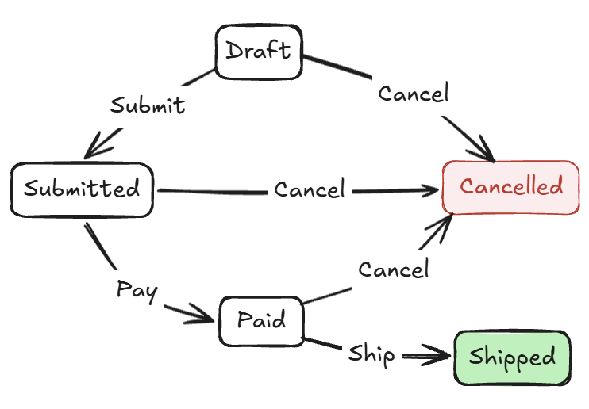

第 1 章 從可變物件到不可變資料
本章內容：
- 可變物件在大型程式中帶來的狀態追蹤困難
- 核心思維：把「改變」表達成「轉換」
- 用 C#
record和with建立不可變資料的新版本 - 不可變資料的三個核心好處：可預測、易測試、易追蹤
- 以一個簡單範例展示設計風格的轉變
- 可變設計依然適用的場景
- 本書採取的六項設計立場
身為程式設計師，「修改物件的狀態」就像呼吸、喝水一樣理所當然。這裡說的狀態，指的是物件在某個時間點持有的資料值，例如屬性（property）或欄位（field）的值。
比如說，你有一張訂單，想把它標記為「已付款」。一種很直觀的寫法是：
order.Status = OrderStatus.Paid;
order.PaidAt = DateTimeOffset.UtcNow;這種寫法直接又清楚。在一個小程式裡，這完全沒有問題。
可是當程式慢慢長大，這種「直接改物件狀態」的做法可能會碰到麻煩：你開始難以確定某個物件在某個時間點，到底處於什麼狀態，以及是誰在什麼時候把它改成了那個狀態。
本章從這個問題點出發，介紹不可變資料設計（immutable data design）的基本思維：不直接修改物件，而是把每一次「改變」表達成「建立一個新版本」。這個思維轉換看起來很小，但是對於以資料為核心的應用程式（data-centric applications）來說，卻會深刻影響資料建模、狀態轉換、可測試性與可維護性。這是貫穿整本書的核心概念。
至於效能，不可變設計不是單純的一定比較快或一定比較慢：它可能減少維護和除錯成本，也可能因為建立新物件而增加記憶體配置（allocation）成本。因此，實務上必須搭配效能測試來確認其效益。
1.1 可變物件的煩惱
可變物件一開始看起來通常都很合理。問題往往是在系統逐漸長大、變複雜之後才浮現：同一個物件被傳進不同方法、服務或背景流程，每個地方都可能改變它的一部分狀態。
先來看一個具體的例子。假設你在開發一個訂單管理系統。訂單建立後，可以經過提交、付款、出貨等狀態轉換，也可以在符合某些條件的情況下取消訂單。一種直覺的設計是建立一個 Order 類別，並使用一些屬性（properties）來記錄訂單的所有資訊：
public class Order
{
public string Id { get; set; } = string.Empty; // 訂單編號
public string CustomerId { get; set; } = string.Empty; // 客戶編號
public OrderStatus Status { get; set; } // 訂單狀態
public List<OrderLine> Lines { get; set; } = []; // 訂單明細
public decimal Total { get; set; } // 訂單總金額
public DateTimeOffset CreatedAt { get; set; } // 建立時間
public DateTimeOffset? SubmittedAt { get; set; } // 提交時間
public DateTimeOffset? PaidAt { get; set; } // 付款時間
public DateTimeOffset? ShippedAt { get; set; } // 出貨時間
public string? CancelReason { get; set; } // 取消原因
}配合一個處理訂單狀態轉換的服務，假設名稱是 OrderService：
public class OrderService
{
public void Submit(Order order, DateTimeOffset now) // (1)
{
order.Status = OrderStatus.Submitted;
order.SubmittedAt = now;
}
public void Pay(Order order, DateTimeOffset now) // (2)
{
order.Status = OrderStatus.Paid;
order.PaidAt = now;
}
public void Ship(Order order, DateTimeOffset now) // (3)
{
order.Status = OrderStatus.Shipped;
order.ShippedAt = now;
}
public void Cancel(Order order, string reason) // (4)
{
order.Status = OrderStatus.Cancelled;
order.CancelReason = reason;
order.SubmittedAt = null;
order.PaidAt = null;
}
}此訂單服務提供了四個方法：
Submit: 將訂單標記為已提交，並記錄提交時間。Pay: 將訂單標記為已付款，並記錄付款時間。Ship: 將訂單標記為已出貨，並記錄出貨時間。Cancel: 將訂單標記為已取消，保存取消原因，並清掉提交與付款時間。
這四個方法分別會將訂單標記為已提交（Submitted）、已付款（Paid）、已出貨（Shipped）、已取消（Cancelled）。
原始碼： DemoMutableOrder
這個設計在小程式裡跑起來沒問題，但仔細考慮一下，它有幾個隱患。
1.1.1 隱患一：狀態和資料的對應關係不明確
看看 Cancel 方法，它把 SubmittedAt（提交時間）和 PaidAt（付款時間）清掉了：
public void Cancel(Order order, string reason)
{
order.Status = OrderStatus.Cancelled;
order.CancelReason = reason;
order.SubmittedAt = null;
order.PaidAt = null;
}可是，取消訂單的時候需要清掉這些欄位嗎？如果一張訂單已經付款了才被取消，PaidAt 應該要保留（作為歷史記錄）還是清掉？
按目前的設計，這種「欄位值和業務意義之間的對應關係」需透過閱讀程式碼來理解，無法從型別上看出來。
更麻煩的是，Order 物件有一堆 nullable 欄位，像是 PaidAt、ShippedAt。以 PaidAt == null 為例，這可能代表訂單「尚未付款」，也可能是「曾經付款、但取消後清掉記錄」——同一個 null 值對應到兩種業務意義，因此容易造成混淆。那麼，單純把 Order 改成不可變（immutable）就能夠自動消除這種歧義嗎？答案是不行。
如果只是把 Order 改成不可變，而 Status 屬性還是照舊搭配一堆 nullable 欄位，那麼 PaidAt == null 依然可能有多重意義，導致多種解讀。完整的改善需要更精確的型別設計：讓「狀態」和「該狀態應該攜帶哪些資料」被明確表達出來。不可變設計的價值在於，它會促使我們把「狀態轉換」這件事寫成清楚的流程，而不是在同一個物件上清空欄位、修改狀態，讓語意散落在各個方法裡。
這是資料表示（representation）的問題。程式碼裡面的資料不只要「能存」，還要能說清楚自己代表什麼。當 Status、PaidAt、CancelReason 之間的關係只存在於開發者腦中，而沒有被型別或方法明確表達出來，每一段使用 Order 的程式都得猜一次這些欄位的語意。猜對了只是多花時間；猜錯了，便可能產生 bug。
1.1.2 隱患二：任何方法都能修改任何欄位
Order 型別的所有屬性都是可設定的（例如都寫成 { get; set; }）。這代表系統中任何拿到某個 order 物件參考的程式碼，都可以在任何時候修改任何欄位。例如：
order.Status = OrderStatus.Submitted;
order.SubmittedAt = now;這在小團隊、小程式裡不是問題，但隨著程式變大，一個 Order 物件可能被傳進好幾個服務、中介軟體元件（middleware）或事件處理常式（event handler）。然後，你開始不確定：這個 order 的 Status 在這個時間點還是 Submitted 嗎？有沒有哪個地方已經改過它了？
要回答這個問題，你必須在腦子裡重播整個執行流程，或者透過除錯工具一步步觀察物件的狀態變化。這就是我們常說的「難以推理（hard to reason about）」。
1.1.3 隱患三：多個地方修改同一個物件
假設有一種情況：OrderService.Pay 方法在執行的同時，有另一個非同步的（asynchronous）流程也在讀取或修改同一個 order 物件——例如一個自動通知的背景工作。
可變物件加上多個執行路徑，是競爭狀況（race condition）的溫床。原因是這些欄位更新不是原子操作（atomic operation）：Pay 會先設定 Status，再設定 PaidAt。如果另一段程式剛好在兩次指派之間讀取同一個物件，就可能看到一個正處於「中間狀態」的訂單：Status 已經是 Paid（訂單已付款），但 PaidAt 還是 null（付款時間尚未指定）。
這種問題很難穩定重現，所以也不容易除錯。
1.2 換個角度：把改變表達成轉換
再想想「修改訂單狀態」這件事的本質。當你「付款一張訂單」時，本質上發生了什麼？你有一張「已提交的訂單」，你想要得到一張「已付款的訂單」。這兩張訂單大部分內容相同，只有狀態和付款時間不同。
用可變物件的思維，會是：你把同一個物件從一個狀態改到另一個狀態。這的確是最直觀的做法。
但還有另一種做法：從舊版本的訂單，建立出一個新版本的訂單；舊物件不會在原地修改，而新物件帶著新的狀態。這種 「改變 = 建立新版本」的思維，就是不可變資料設計的核心。
用 C# 語法來表現上述兩種思維，看起來像這樣：
// 可變設計：直接修改現有物件
order.Status = OrderStatus.Paid;
order.PaidAt = now;
// 不可變設計：從現有物件建立新版本
var paidOrder = order with
{
Status = OrderStatus.Paid,
PaidAt = now
};採用不可變設計時，order 的屬性維持原值，paidOrder 則是新建立的物件，帶著更新後的狀態。
這裡有一個很重要、但初學時容易忽略的細節：不可變設計不是讓資料「停住不動」，而是每一次需要改變狀態時，都建立出一個新版本。如果你想讓程式繼續使用付款後的訂單，就必須把回傳的新版本放進一個新的變數，或者覆蓋原本的變數名稱，像這樣：
order = order with
{
Status = OrderStatus.Paid,
PaidAt = now
};這段程式碼看起來像「修改 order」，但實際上是讓變數 order 指向一個新的物件。舊物件的屬性並未被重新指派。也就是說，不可變設計限制的是「物件本身不能被原地修改」，不是「變數永遠不能指向新值」。
這只是一個表達方式的改變，但它帶來的影響遠比看起來更大。接下來我們會看到為什麼。
1.3 C# 的 record 和 with 運算式
在說明不可變設計的好處之前，先介紹 C# 對這種設計方式提供的語法支援。
1.3.1 用 record 建立不可變資料
C# 9 引入了 record 型別，其中一個主要目的就是作為不可變資料的載體。它提供了一組很適合表達「資料值」的預設行為；如果你採用位置參數（positional parameters）的寫法，或者使用 init 屬性，就能比較輕鬆地寫出建立後不再修改的資料物件。以下示範一種最簡單的寫法：
public record Order(
string Id, // 訂單編號，用來識別這張訂單。
string CustomerId, // 客戶編號，用來連結下單的客戶。
OrderStatus Status, // 訂單狀態。
decimal Total, // 訂單總金額。
DateTimeOffset CreatedAt, // 訂單建立時間。
DateTimeOffset? PaidAt = null // 付款時間。
);這種把主要資料成員直接寫在型別名稱後方小括號中的寫法，稱為 positional record（位置式 record）。這種寫法，編譯器會自動幫你：
- 建立只能在物件初始化期間指定的屬性；這類屬性稱為 init-only 屬性，第 2 章會正式介紹。
- 實作基於值的相等性比較（
Equals、GetHashCode）。 - 生成
ToString方法，方便除錯。
需要建立一個 Order 物件時，可以這樣寫：
var order = new Order(
Id: "ORD-001",
CustomerId: "CUST-42",
Status: OrderStatus.Draft, // Draft 代表訂單尚未送出。
Total: 1200m,
CreatedAt: DateTimeOffset.UtcNow
);建立訂單物件之後，你沒辦法直接重新指派它的 init-only 屬性：
order.Status = OrderStatus.Paid; // 編譯錯誤！初始化已經完成這就是為什麼剛才說，採用 init-only 屬性能夠比較輕鬆地寫出建立後不再修改的資料物件。
1.3.2 用 with 運算式建立新版本
record 的另一個重要語法是 with 運算式。它讓你從現有的 record 建立新版本，只改你想改的屬性，其他的照搬：
var paidOrder = order with
{
Status = OrderStatus.Paid,
PaidAt = DateTimeOffset.UtcNow
};執行這段程式碼之後：
order的屬性維持原值，仍然是原本的狀態。paidOrder是一個新的Order物件，帶著更新後的Status和PaidAt。
也就是說，with 做的是「以現有物件為基礎複製一份，再套用指定的變更」。這也是為什麼你必須把結果放進 paidOrder，或者把它傳給下一個流程：如果沒有使用 with 產生的新物件，原本的 order 不會自己變成已付款。
這就是「把改變表達成轉換」的 C# 實作方式。
請注意這裡的「複製」指的是淺層複製：Status、PaidAt 這類值會出現在新物件上，但如果 record 裡面放的是某個可變集合，新的 record 仍可能指向同一個集合。這是因為 record 本身不保證深層不可變，而 with 執行的是淺層複製。如果某個屬性參考可變物件，例如集合，新舊兩個 record 仍可能指向同一個物件。因此，不可變資料設計不能單靠 record，還需要搭配合適的型別；第 2 章會深入處理這個問題。
Note
適用於
record的with運算式在 C# 9 中引入，並在 C# 10 中擴充支援到struct與匿名型別。如果專案使用 C# 8 或更早的語言版本，就需要改用手動複製等方式。
1.4 不可變設計的三個好處
現在我們有了基本的語法概念，來看看這種設計風格實際上能解決什麼問題。
1.4.1 好處一：可預測（predictable）
可預測的意思是：物件不會在你看不到的地方被原地修改。以本章的 Order 為例，它的 init-only 屬性不會在傳入方法後被重新指派。
為了避免讀者誤解，這裡再次重申：此範例的作法是淺層複製。也就是說，如果物件的屬性是參考到可變物件，例如
Lines（訂單明細）背後的集合，該物件的內容仍可能改變；這是「淺層不可變」的限制。第 2 章會進一步說明解法與集合選型，第 3 章則會有比較完整的Order範例。
以下範例展示了這種特性：
// 不可變設計下，這段程式碼的行為是可預測的
var now = DateTimeOffset.UtcNow;
var submittedOrder = OrderWorkflow.Submit(draft, now);
var paidOrder = OrderWorkflow.Pay(submittedOrder, now);
// submittedOrder 在這裡仍然是 Submitted 狀態
// paidOrder 是 Paid 狀態
// 兩者是不同的 Order 物件
Console.WriteLine(submittedOrder.Status); // Submitted
Console.WriteLine(paidOrder.Status); // Paid此範例中的 OrderWorkflow 是集中放置訂單建立與狀態轉換方法的靜態類別。請先把它當作「接收舊版本、回傳新版本」的操作集合，稍後在 1.5 節會再介紹其中各個方法的實作。
如果是可變設計，你可能會擔心：「OrderWorkflow.Pay 有沒有改動 submittedOrder？」你必須去看實作才能確認。在這個不可變設計裡，Pay 會回傳另一個 Order，不會重新指派 submittedOrder 的屬性。
1.4.2 好處二：易測試（testable）
不可變資料讓測試變得非常容易，原因有兩個。
第一，轉換方法不會修改測試輸入。你準備一個 draft 訂單，把它傳進幾個方法；結束後，draft 還是原來那個 draft。
第二，可以逐步驗證每一個狀態轉換。每個步驟產生一個獨立的新物件，你可以在任何一步暫停並驗證當時的狀態。以下以 xUnit 來展示單元測試的寫法（其中的 [Fact] 只是用來標記底下的方法是一個測試方法）：
[Fact]
public void Order_Should_Track_Each_State_Transition()
{
// Arrange: 建立測試起點。
// draft 不會被後來的任何操作改變狀態。
// fixedTime 讓時間相關斷言保持穩定、可重複。
var fixedTime = new DateTimeOffset(
2026, 1, 1, 9, 0, 0, TimeSpan.Zero);
var draft = OrderWorkflow.Create("CUST-42", [], fixedTime);
// Act + Assert: Submit 回傳新的訂單版本。
var submitted = OrderWorkflow.Submit(draft, fixedTime);
Assert.Equal(OrderStatus.Submitted, submitted.Status);
Assert.Equal(fixedTime, submitted.SubmittedAt);
// Pay 接收 submitted，並回傳另一個新的訂單版本。
var paid = OrderWorkflow.Pay(submitted, fixedTime.AddHours(1));
Assert.Equal(OrderStatus.Paid, paid.Status);
Assert.Equal(fixedTime.AddHours(1), paid.PaidAt);
// submitted 仍然保留送出後的快照，不會被 Pay 的結果連動修改。
Assert.Equal(OrderStatus.Submitted, submitted.Status);
Assert.Null(submitted.PaidAt);
}這個測試清楚地展示了整個狀態轉換的流程，而且每一次狀態轉換都能被單獨驗證。
1.4.3 好處三：易追蹤（traceable）
不可變資料很適合表達「快照（snapshot）」：每次轉換都能產生一個代表當時狀態的新物件。只要把需要的版本保存下來，就能建立清楚的歷史。
這在稽核日誌（audit log）、事件溯源（event sourcing）、問題診斷上非常有用：
// 這段流程的每一步都有一個不同的 Order 狀態快照
var draft = OrderWorkflow.Create(customerId, lines, clock.UtcNow);
var submitted = OrderWorkflow.Submit(draft, clock.UtcNow);
var paid = OrderWorkflow.Pay(submitted, clock.UtcNow.AddHours(2));
var shipped = OrderWorkflow.Ship(
paid,
clock.UtcNow.AddDays(1));
// 你可以把所有版本都記錄下來
var auditTrail = new[]
{
draft, submitted, paid, shipped
};
// 現在你保留了每個步驟的狀態歷史可變設計的問題是：一個物件被修改之後，舊的狀態就消失了，除非你額外建立快照機制。不可變設計下，物件本身的狀態不會改變，而是在需要改變狀態時產生新的版本；因此，你可以決定哪些版本要持久化成歷史紀錄，而不用在修改前手動建立物件的快照。
Note: 不可變設計本身不會自動保存這些版本，也不等同於稽核日誌或事件溯源（event sourcing）。
1.5 回到 Order：不可變版本長什麼樣子
把前面的概念整合起來，讓我們重新設計 Order。
首先，用 record 定義 Order：
public sealed record Order( // (1)
string Id,
string CustomerId,
OrderStatus Status,
IReadOnlyList<OrderLine> Lines, // (2)
DateTimeOffset CreatedAt,
DateTimeOffset? SubmittedAt = null, // (3)
DateTimeOffset? PaidAt = null,
DateTimeOffset? ShippedAt = null,
string? CancelReason = null
)
{
public decimal Total => Lines.Sum(
line => line.UnitPrice * line.Quantity); // (4)
}這裡有幾個設計決策值得留意：
- 使用
sealed：表示這個型別不打算被繼承，亦即禁止建立衍生類別。 - 使用
IReadOnlyList<OrderLine>而非List<OrderLine>：讓Order的公開 API 不提供修改明細的入口。不過，這只是第一層保護；如何確保集合真的不可變，第 2 章會再深入討論。 - 有預設值的 nullable 欄位放在後面：像
SubmittedAt = null這類欄位可以在建立物件時省略；前面沒有預設值的欄位則必須由呼叫端明確提供。這也符合 C# 的參數規則：有預設值的參數必須放在沒有預設值的參數後面（換言之，必要參數要寫在可選參數的前面）。 Total是根據Lines計算的衍生屬性，呼叫端無法讓訂單明細與總金額產生不一致。
Note
IReadOnlyList<T>不等於 immutable collection。它只表示呼叫端不能透過這個介面直接新增或刪除項目；如果底層集合仍被其他程式碼持有，內容仍可能改變。相關細節在第 2 章有更完整的說明。
接下來，在 OrderWorkflow 類別中定義狀態轉換的方法，總共有以下方法：
Create: 建立Draft狀態的訂單，即尚未提交的草稿訂單。Submit: 提交訂單，會把訂單從草稿狀態轉成「已提交」。Pay: 把已提交的訂單轉成「已付款」。Ship: 把已付款的訂單轉成「已出貨」。Cancel: 建立「已取消」的訂單版本，並保留取消前的歷史欄位。
這裡先用一張簡化的狀態轉換圖，以便了解這幾個方法之間的關係：

這張圖只是本章範例的簡化流程。至於如何限制不合法的狀態轉換，後面的章節會再處理。
為了方便閱讀，我們把同一個類別拆成幾段來看。以下片段都是 OrderWorkflow 類別的方法，且省略外層的 public static class OrderWorkflow 宣告。
先看建立訂單的部分。Create 的責任是建立一個 Draft 狀態的訂單：
public static Order Create(
string customerId,
IReadOnlyList<OrderLine> lines,
DateTimeOffset now)
{
return new Order(
Id: Guid.NewGuid().ToString(),
CustomerId: customerId,
Status: OrderStatus.Draft,
Lines: lines,
CreatedAt: now
);
}開單時間 CreatedAt 由外部傳入，而不是在方法裡直接讀取系統時間。這樣測試程式就可以傳入固定時間，不會因為每次執行時間不同，而讓單元測試或整合測試的結果變得不穩定。訂單總金額則由 Order.Total 根據明細即時計算，確保兩者一致。
這裡為了讓第一章的範例保持簡潔，Create 仍在內部呼叫 Guid.NewGuid()，因此它的輸出尚未完全由參數決定。第 4 章會改由 application layer 取得 ID 與目前時間，再以普通值傳入 domain factory；application layer 負責協調外部依賴與流程，domain factory 則負責建立符合業務規則的 domain model。
接著是典型的狀態轉換：Submit 和 Pay。它們都接收一個既有的 Order，再用 with 建立新的版本：
public static Order Submit(Order order, DateTimeOffset now)
{
return order with
{
Status = OrderStatus.Submitted,
SubmittedAt = now
};
}
public static Order Pay(Order order, DateTimeOffset now)
{
return order with
{
Status = OrderStatus.Paid,
PaidAt = now
};
}這裡的重點是：Submit 和 Pay 方法都沒有重新指派傳入 order 的屬性。訂單提交時間 SubmittedAt 和付款時間 PaidAt 只會出現在回傳的新版本上，原本訂單的屬性仍然維持原值。
最後看兩個稍微有業務語意的轉換：出貨與取消。
public static Order Ship(
Order order,
DateTimeOffset now)
{
return order with
{
Status = OrderStatus.Shipped,
ShippedAt = now
};
}
public static Order Cancel(Order order, string reason)
{
return order with
{
Status = OrderStatus.Cancelled,
CancelReason = reason
// 注意：SubmittedAt 和 PaidAt 都完整保留
// 它們是歷史記錄，不應該清掉
};
}原始碼： DemoImmutableOrder
Cancel 特別值得注意。它只補上取消原因並改變狀態，不會清掉 SubmittedAt 或 PaidAt。這是本章範例選擇的業務語意：取消是一個新的狀態，不代表過去發生過的事應該被抹除。
和原本的可變設計相比，這個版本有以下幾個改進：
每個方法的意圖清楚。
Submit接收一個Order，回傳一個Order——這樣的簽名暗示它被設計成「接收舊版本、回傳新版本」的轉換操作，而不是去修改傳入物件。只要整個訂單處理流程維持一致的設計，呼叫端就能用同一套方式理解這些方法。取消訂單時會保留歷史欄位。 在本章假設的業務規則下，取消不會抹除先前發生的事件，因此被取消的訂單仍保留
SubmittedAt和PaidAt。其他系統仍應依自己的取消、作廢與退款規則決定資料如何表示。可以在多個地方使用同一個
order物件，而不用擔心物件狀態被原地修改。 某個地方呼叫Pay(order, now)，不會讓另一個地方手上的order突然變成已付款。
Note
in與ref readonly不是物件不可變的保證。C# 的方法參數可以使用in或ref readonly，在方法簽名中表示「以唯讀參考傳入」。這代表方法內不能把該參數重新指派成另一個值。（參閱 C# language reference: Method parameters and modifiers）不過，這不是 C++
const那種「此物件不會被修改」的保證。若參數型別是 class 或 record class，宣告為in Order order只能保護order這個參數變數本身，不能防止方法呼叫物件上的可變成員來改變其內部狀態，也不能讓order.Lines背後的集合因此變成真正不可變。因此，在這個例子中，不可變設計主要不是靠參數修飾詞完成，而是靠
Order型別本身不提供修改入口，以及整個OrderWorkflow維持「接收舊版本、回傳新版本」的一致慣例。
1.6 何時修改狀態？
初次接觸不可變設計時，常見的一個困惑是：「那什麼時候才會修改物件的狀態呢？」
答案是：你會改變「應用程式的狀態」，但不修改個別的資料物件。
想像一個應用程式的某個地方：
// 從資料庫讀取訂單（這個 order 是某個時間點的快照）
var order = await orderRepository.GetAsync(orderId);
// 建立付款後的新版本
var paidOrder = OrderWorkflow.Pay(order, clock.UtcNow);
// 把新版本存回資料庫（這是對「應用程式狀態」的修改）
await orderRepository.SaveAsync(paidOrder);這裡的 orderRepository 代表持久化抽象層（persistence abstraction layer），不預設底層使用 Entity Framework Core、其他 ORM（object-relational mapping）、Dapper、手寫 SQL、或其他儲存方式。SaveAsync 的具體實作會依技術選擇而異；此處只強調呼叫端會把新的訂單版本交給 repository 持久化。第 5 章會再討論採用 ORM tracking 時的取捨。
「應用程式狀態」（資料庫裡的記錄）確實被更新了。但 order 這個 C# 物件本身從來沒有被修改過。整個過程是：讀取舊狀態 → 計算新狀態 → 儲存新狀態。
這個模式讓每個步驟都可以獨立測試，也讓整個流程更容易理解。
1.7 可變設計的適用場景
在進一步討論之前，先釐清一件事：不是所有的東西都適合不可變設計。
在以下這些情況，可變設計往往更自然：
- ORM 實體（entity）：Entity Framework Core 的傳統追蹤更新模式，通常會追蹤同一個實體物件上的屬性變化，再把變更寫回資料庫。如果完全改成每次都建立新物件，就需要額外處理實體識別與追蹤狀態，使用上可能變得彆扭。不可變實體並非絕對不可行，但需要不同的對應與更新策略。
- 採用傳統 MVVM 的 UI 狀態：WPF、MAUI 等框架常搭配可變的 ViewModel 和雙向綁定（two-way binding），讓畫面輸入立即反映到目前正在編輯的狀態。如果每次輸入都建立整個畫面的新版本，可能讓資料綁定、驗證訊息與焦點狀態更難管理。採用單向資料流的 UI 架構則可能適合不可變狀態。
- 建構過程中的臨時物件：在方法內部用
List<T>蒐集資料，最後再轉成不可變集合，是很正常的做法。 - 效能敏感的熱路徑：每次「更新」都建立新物件會增加記憶體配置次數與 GC 壓力；在高頻低延遲的場景，這些額外成本可能直接反映在延遲或吞吐量上。
我們會在第 5 章完整討論這些場景。現在先記住：這本書介紹的是一個工具，不是教條。學會在什麼情況下使用它，比學會語法更重要。
不可變設計、DOP 與 DOD 的關係
本書所說的不可變資料設計，不等同於一套完整的資料導向程式設計（data-oriented programming, DOP）方法論。DOP 並沒有唯一的原則表述。以 Yehonathan Sharvit 提出的版本為例，DOP 包含四項相互配合的原則：分離程式碼與資料、以通用資料結構表示資料、將資料視為不可變，以及將資料結構描述（schema）與資料表示分離。不可變性只是其中一項。（參閱 Principles of Data-Oriented Programming）
本書聚焦於不可變資料設計，但仍然重視 C# 的具名型別，並依情境判斷行為應該放在資料型別內，還是放在外部服務。換句話說，本書與 DOP 的部分觀念相通，但並未建議讀者遵循完整的 DOP 方法論。
不可變資料設計也不同於高效能程式設計領域常說的資料導向設計（data-oriented design, DOD）。DOD 關注資料的實際使用方式，以及資料在記憶體中的排列方式，常依照存取模式重新組織資料，以改善 CPU 快取使用率與執行效能。它常見於遊戲與其他效能敏感系統，而「不可變性」並非其必要條件。
1.8 本書採取的設計立場
本書的設計立場受到 Brian Goetz 對資料導向程式設計的討論啟發，但依 C# 的型別系統與一般應用程式的實務需求做了調整。（參閱 Data Oriented Programming in Java）以下六項立場不是用來判定一段程式碼是否符合某種方法論，而是作為判斷何時採用不可變設計的思考依據。
- 精確表示資料：對於以承載資料為主要責任的型別，使用透明、具名的型別，清楚表達資料的完整內容與意義。這裡所說的「透明」，是指型別提供足以讀取並重建其資料內容的公開 API。
- 優先保持不可變：對需要共享、傳遞、或長期保存的資料，優先避免原地修改，降低追蹤狀態變化時的推理成本。
- 以轉換表達改變：需要更新狀態時，根據舊版本建立新版本，讓輸入、輸出與狀態變化都能明確辨識。
- 用型別排除非法狀態：能由型別系統表達的規則，就交給編譯器檢查；其餘規則則在建立物件或接收外部資料時驗證。
- 依內聚性安排行為：行為可以放在資料型別內，也可以放在外部服務。判斷依據是業務內聚性、外部相依性與流程責任，而不是預設所有方法都必須放在同一種位置。
- 有意識地保留可變設計：ORM 實體、UI 狀態、建構過程中的臨時物件、以及效能敏感的熱路徑，仍可採用受控的可變設計。
後續章節會從 C# 語言工具、資料轉換、API 資料模型、實務取捨與狀態建模等角度，逐步展開這六項立場。
1.9 本章回顧
這章介紹了不可變資料設計的基本思維。我們從一個可變的 Order 類別出發，看到了可變設計在大型程式中帶來的問題，然後改寫成不可變版本。
核心的思維轉換是：不直接修改物件，而是建立帶有新狀態的新版本。 在 C# 裡，record 和 with 運算式是實現這個思維的主要工具。
不可變設計帶來三個核心好處：
- 可預測：轉換方法不會原地修改輸入物件，狀態變化更加明確。
- 易測試：轉換方法不會原地修改輸入物件的屬性，每個狀態轉換都可以獨立驗證。
- 易追蹤：每個保留下來的版本都可作為狀態快照，方便建立稽核軌跡（audit trail）。
同時，不可變設計不是讓應用程式狀態永遠停住不動，而是避免原地修改個別資料物件；當狀態需要前進時，程式會根據舊版本計算出新版本，再把新版本存回資料庫、記憶體狀態或下一個處理流程。
也要記得，不可變設計是一種工具，不是教條。ORM 實體、UI 狀態、建構過程中的臨時物件，以及效能敏感的熱路徑，仍可能更適合使用可變設計。
接下來的第 2 章，我們會深入探討 C# 中用來建構不可變資料的語言特性，包括 record、init、with，以及不可變集合的選擇方法。